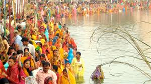

Nepali Culture Explorer
Nepali Culture Explorer☀️Chhath
छठ पूजा
छठ पर्व प्रकृति, शुद्धता र सामाजिक समानताको प्रतीकका रूपमा मनाइने सूर्यदेव र छठी मैयाको उपासनाको महान् पर्व हो।
- अवधि: कुल ४ दिन (कार्तिक शुक्ल चतुर्थीदेखि सप्तमीसम्म)
- मुख्य विशेषता: अस्ताउँदो र उदाउँदो सूर्यलाई अर्घ्य
- मुख्य आकर्षण: सजिएका नदी घाट, ठेकुवा प्रसाद, र भक्तिमय छठ गीतहरू
Visuals of Chhath


Chhath Music
छठ पर्व किन मनाइन्छ र यसको पौराणिक कथा?
छठ पर्वमा सूर्यदेव (प्रत्यक्ष देखिने देवता) र छठी मैया (प्रकृतिको छैटौँ अंश/सन्तानको रक्षा गर्ने देवी) को पूजा गरिन्छ। यसका मुख्य पौराणिक मान्यताहरू यस प्रकार छन्:
- रामायण कथा: १४ वर्षको वनवास पूरा गरी अयोध्या फर्केपछि भगवान् श्रीराम र माता सीताले राज्यमा सुख-शान्तिका लागि कार्तिक शुक्ल षष्ठीका दिन सूर्यदेवको व्रत बसी पूजा गर्नुभएको विश्वास गरिन्छ।
- महाभारत कथा: सूर्यपुत्र कर्णले सधैँ कम्मरसम्म पानीमा उभिएर सूर्यको आराधना गर्ने गर्थे, जसका कारण उनलाई अद्भुत शक्ति प्राप्त भयो। अर्को कथा अनुसार पाण्डवहरूले गुमेको राज्य फिर्ता पाउन र द्रौपदीले सन्तान प्राप्तिका लागि छठ व्रत बसेका थिए।
कति दिन मनाइन्छ?
छठ पर्व कुल ४ दिनसम्म एकदमै कठोर नियम, शुद्धता र सात्त्विक आहारको पालना गर्दै मनाइन्छ।
छठ कसरी मनाइन्छ? (४ दिनका मुख्य विधिहरू)
- पहिलो दिन - नहाय-खाय (चतुर्थी): व्रतालुहरूले नदी वा तलाउमा स्नान गरी शुद्ध सात्त्विक भोजन (लौकाको तरकारी, भात र चनाको दाल) खान्छन्। यसै दिनदेखि घरमा शुद्धताको विशेष ध्यान दिइन्छ।
- दोस्रो दिन - खरना (पञ्चमी): दिनभरि निर्जला व्रत बसेर साँझपख सखर (गुड) र दूधमा पकाइएको खिर, पुरी र फलफूल गणेश तथा सूर्यदेवलाई चढाएर पूजा गरिन्छ। त्यसपछि व्रतालुले प्रसाद ग्रहण गर्छन्।
- तेस्रो दिन - साँझको अर्घ्य / सँझिया अरघ (षष्ठी): छठको सबैभन्दा मुख्य दिन! बाँसको ढकी र नाङ्लोमा ठेकुवा, भुसुवा, फलफूल र उखु सजाएर नदी, पोखरी वा घाटमा लगिन्छ। साँझपख कम्मरसम्म पानीमा उभिएर अस्ताउँदो सूर्यलाई पहिलो अर्घ्य दिइन्छ।
- चौथो दिन - बिहानको अर्घ्य / पारन (सप्तमी): रातभर घाटमै वा घरमा जाग्राम बसेर बिहान एकाबिहानै पुनः घाटमा पुगिन्छ। उदाउँदो सूर्यलाई दोस्रो अर्घ्य दिएपछि पोखरीको पानी टाउकोमा छ्यापेर प्रसाद बाँडिन्छ र ४ दिनको कठोर व्रतको समापन (पारन) हुन्छ।
छठ पर्वको सांस्कृतिक महत्त्व
छठ पर्व केवल पूजा मात्र नभई सामाजिक एकता, प्रकृति प्रेम र समानताको गहिरो प्रतीक हो:
- सामाजिक समानता (जातपातको अन्त्य): छठको घाटमा धनी-गरीब, ठूलो-साना, वा कुनै जातजातिका आधारमा विभेद हुँदैन। सबैजना एउटै नदीको किनारमा, एउटै पानीमा उभिएर एउटै सूर्यदेवको पूजा गर्छन्।
- प्रकृति र वातावरण संरक्षण: यस पर्वमा सूर्य, नदी, पोखरी, केराको खम्बा, माटोको दियो, उखु, र माटोका भाँडाहरूको पूजा गरिन्छ। यसले मानिसलाई प्रकृतिसँग सीधा जोड्छ र जल तथा वातावरण सफा राख्ने सन्देश दिन्छ।
- अस्ताउँदो र उदाउँदो दुवै सूर्यको सम्मान: संसारले प्राय: उदाउँदो (उदय हुँदै गरेको) शक्तिलाई मात्र पूजा गर्छ, तर छठले अस्ताउँदो (ढल्किँदै गरेको) सूर्यलाई पनि उत्तिकै श्रद्धाका साथ अर्घ्य दिन्छ। यसले जीवनको ह्रास र विकास दुवै सत्य हुन् भन्ने ठूलो दर्शन सिकाउँछ।
✨ छठ पर्वको सबैभन्दा सुन्दर पक्ष
"छठको सबैभन्दा सुन्दर पक्ष भनेको 'झिलिमिली सजिएका घाट, अस्ताउँदो-उदाउँदो सूर्य र माटोको बास्ना' हो। साँझ र बिहानको समयमा कम्मरसम्म पानीमा उभिएर रातो-पहेंलो पहिरनमा व्रतालुहरूले सूर्यलाई अर्घ्य दिँदाको दृश्य, पृष्ठभूमिमा गुन्जिने छठी मैयाका मधुर गीतहरू, र बाँसको नाङ्लोमा सजाइएको ठेकुवाको सुगन्धले हरेक मानिसको मन पवित्र बनाउँछ।"